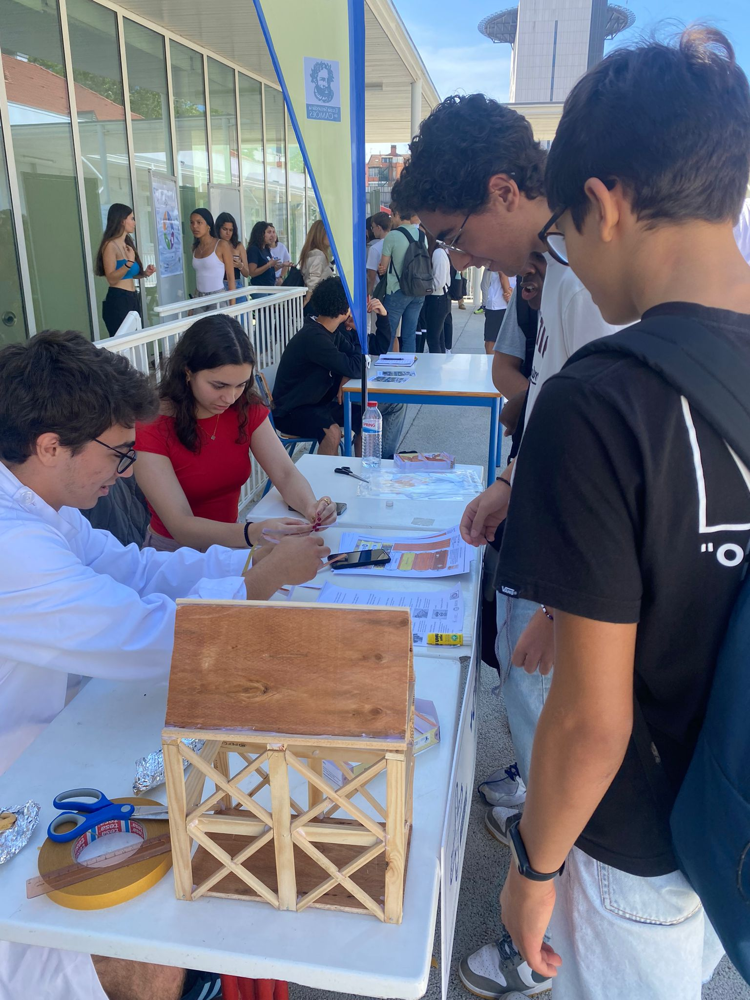

Dia Aberto 2023/24
Data de Realização: Maio de 2024
Objetivos:
No mês de maio de 2024, o clube +CIÊNCI@CAMÕES dinamizou uma edição muito especial do Dia Aberto, transformando o espaço escolar num ponto de encontro para a partilha de projetos práticos, experiências laboratoriais e divulgação científica feita de alunos para alunos.
O evento serviu para mostrar à comunidade educativa o resultado do empenho e da dedicação dos membros do clube ao longo do ano letivo. Com várias bancas montadas e mostras de trabalhos práticos, os nossos alunos guiaram os visitantes por um percurso de descoberta, explicando os conceitos científicos por trás de cada projeto e demonstrando como a ciência na Escola Secundária de Camões é dinâmica e interativa.
Dia Aberto de 2023/2024 teve como principais objetivos:
- Divulgar o Trabalho Desenvolvido no Clube: Dar visibilidade e valorizar o esforço, a investigação e a dedicação dos alunos e professores que dão vida ao clube +CIÊNCI@CAMÕES.
- Desenvolver Competências de Comunicação: Desafiar os alunos a saírem do papel de estudantes e passarem a comunicadores de ciência, explicando os seus projetos de forma clara, rigorosa e acessível a todo o público.
- Estimular o Gosto pelas Ciências Experimentais: Motivar outros alunos da escola a juntarem-se ao clube e a interessarem-se pelas atividades laboratoriais e de campo, mostrando que a ciência é prática e divertida.
Grandes Destaques e Atividades:
- Exposição de Projetos e Trabalho Prático: O público pôde conhecer de perto os modelos e os trabalhos desenvolvidos no âmbito das ciências naturais e exatas. Os alunos do clube estiveram nas bancas a dinamizar pequenas demonstrações e a partilhar as suas aprendizagens com os colegas, professores e visitantes.
- Oficinas de Construção de Gaiolas Pombalinas: Inspirados na história e na arquitetura portuguesa, os alunos do clube organizaram uma oficina prática onde os participantes puderam construir as suas próprias gaiolas pombalinas utilizando papel e outros materiais recicláveis. Esta atividade não só promoveu a criatividade e a destreza manual, mas também proporcionou uma oportunidade para aprender.
Parceiros:
Clube Ciência Viva · Instituto Camões · Escola Secundária de Camões
Galeria:


